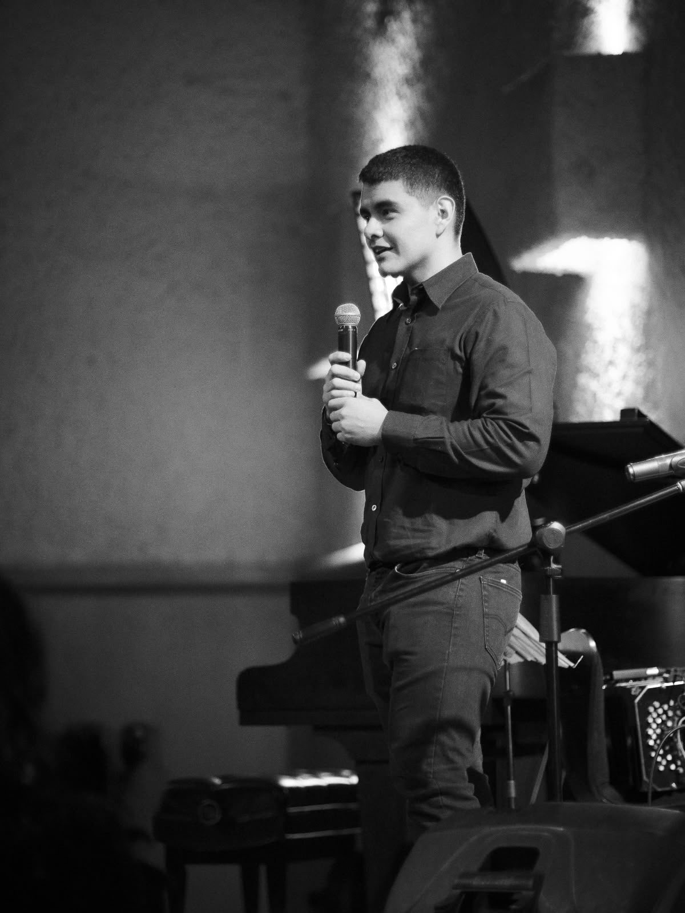

Quiénes somos
El artista detrás de Chanis FX

Soy Isaac Razo Soto, conocido en mi trabajo como "Chanis". Pinto en óleo y acrílico, y también trabajo ilustración en tinta, casi siempre alrededor de figuras humanas, criaturas y escenas con una carga simbólica u oscura.
Actualmente estoy estudiando el bootcamp de Java Full Stack de Generation México, así que entre lienzos también hay código. Este sitio nació justo como práctica de HTML y CSS, pero me pareció más honesto llenarlo con mi obra real en lugar de contenido genérico.
Por qué existe este sitio
Quería un lugar propio para reunir mi trabajo fuera de redes sociales, algo que pudiera mostrar tal cual es: pintura, boceto y proceso, sin filtros de algoritmo de por medio.
Pintura
Óleo y acrílico sobre lienzo, trabajando figura, luz y sombra en escenas con carga narrativa.
Ilustración en tinta
Piezas a pluma, con punteado y líneas cruzadas, para composiciones más detalladas y simbólicas.
Proceso
Bocetos, referencias y el trabajo detrás de cada pieza terminada, para que se vea el camino completo.
A quién va dirigido
A quien busque ilustración o pintura por encargo, y a cualquiera que simplemente quiera ver el trabajo completo detrás de cada obra terminada.